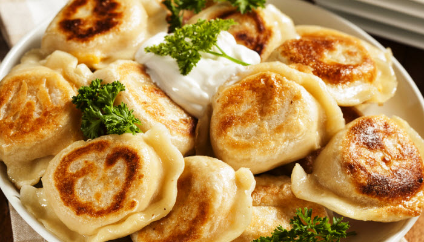

Home
Pierogies

Description
A delicious filled dumpling made from fresh pasta. These take time, but are so worth it! Fill with Sauerkraut Filling or Potato and Cheese Filling. To freeze, place uncooked pierogies in melted butter. Cool, and place in freezer bags. The butter will keep them from sticking.
Ingredients
- 8 cups all-purpose flour
- 4 eggs
- 1 container sour cream
- 1/2 teaspoon salt
- warm water
- 1 recipe Sauerkraut filling OR
- 1 recipe Potato Cheese filling
Steps
- In a large bowl, beat together eggs, carton sour cream, and salt. Stir in flour and warm water. Add water until dough feels like velvet. Turn out onto a lightly floured board, and knead until smooth. Roll out to a 1/8 to 1/4 inch thickness. Cut out 3 1/2 inch circles with either the top of a glass or a biscuit cutter. Cover with waxed paper to prevent drying out if not filling immediately.
- Place 1 or 2 tablespoons filling on one side of a circle of dough. Fold over, and seal by pressing the edges with a fork. Repeat until ingredients are used.
- Bring a large pot of water to a boil. Immerse pierogi. Cook until the dumplings float to the surface. (See Cook's Note for tips on freezing extra pierogies.)